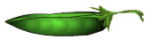
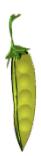
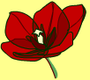
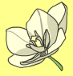
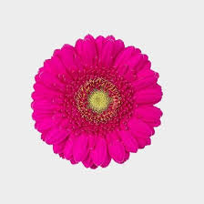

Basic punnett-square demo
This is punnett-square
Basic punnett-square demo editable
This is punnett-square
Light-Dom punnett-square demo editable
Light-Dom punnett-square demo editable
 
Light-Dom punnett-square demo editable
A: 
a: 
